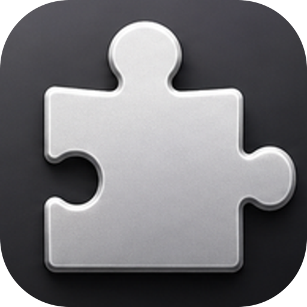

Reads workstream summaries
It asks Pieces OS for recent summaries and looks for the "Next Steps" section.

missingpiecesA small macOS companion for Pieces OS
missingpieces lives in your menu bar and turns recent Pieces workstream summaries into a short, calm list of follow-ups. Open it, check what matters, then get back to work.
Work session - 10:42 AM
Pieces remembers the shape of your work. missingpieces gives that memory a tiny, practical doorway: the next steps you may have missed.
Built around Pieces OS
It asks Pieces OS for recent summaries and looks for the "Next Steps" section.
Follow-ups stay tied to the work session they came from, so scanning feels natural.
No task database, no push back to Pieces, and no background polling.
Menu bar first
The app is meant for the moment between thoughts. Click a row to expand it, double-click to copy, or mark it done locally when it is no longer useful.
Private by habit
missingpieces depends on Pieces OS for memory. It only shows a small local view of follow-ups and keeps your triage choices on your Mac.
macOS 14+
You will need Pieces OS running locally. Once it is connected, missingpieces watches for recent workstream summaries when you ask it to check.